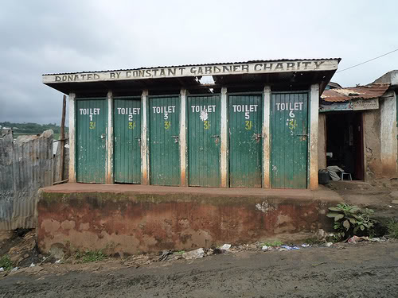

devoxx
Les tendances
collection automne - hiver 2012/2013
christophe.domas@natixis.com
autopromotion
- développeur java depuis le siècle dernier
- IT front (ex north)
- passage d'ordre
- plugins pour GUI de trading
- intérêts: multi-threading, performance, TDD/BDD, toolchain (git, maven, jenkins, etc)
- partisan open source
- participation: paris jug, devoxx, SSII events
devoxx

La plus grosse conférence autour de java en Europe
- 2 jours d'universités (cours, hands-on)
- 2,5 jours de conférences
- 3 400 geeks
- premium sponsors: Oracle/Google
- Anvers - Belgique
- Kinepolis: 7 salles de cinémas


Cher papa noël...
tracks
- Java SE
- Java EE
- Methodology
- Web
- Mobile
- Future
- Architecture, Cloud and Security
- New languages on the JVM
web
html 5 / css3 / javascript
- nashorn : javascript engine inside the JVM (java 8)
- node.js : event driven server in javascript
- vert.X : polyglot eq. Node.JS
- angular.js : client javascript framework by google
- backbone.js : model framework in javascript
- dart : new language compiled in javascript (google)
future
Raspberry PI
Raspberry PI

Raspberry PI / internet of things
JDK + Java FX beta port on linux ARM
client every where => server everywhere

JEE 7
JMS 2.0, WebSocket
JSR 353: Java API for JSON Processing
- parsing, serialization (like JAXP, StAX)
- binding (like JAXB)
{
"firstName": "John",
"lastName": "Smith",
"age": 25,
"address": {
"streetAddress": "21 2nd Street",
"city": "New York",
"state": "NY",
"postalCode": "10021"
},
"phoneNumber": [
{
"type": "home",
"number": "212 555-1234"
},
{
"type": "fax",
"number": "646 555-4567"
}
]
}
<person>
<firstName>John</firstName>
<lastName>Smith</lastName>
<age>25</age>
<address>
<streetAddress>21 2nd Street</streetAddress>
<city>New York</city>
<state>NY</state>
<postalCode>10021</postalCode>
</address>
<phoneNumbers>
<phoneNumber type="home">212 555-1234</phoneNumber>
<phoneNumber type="fax">646 555-4567</phoneNumber>
</phoneNumbers>
</person>
JEE 7
JSR-311: JAX-RS aka REST (ref impl: Jersey)
Back to basics
GET
POST
PUT
DELETE
GET http://example.com/resources/
GET http://example.com/resources/item17
@Path("/resources/{id}/")
java 8
septembre 2013
Jigsaw-> java 9- JVM convergence: hybrid of JRockit and Java Hotspot VM
- java FX 8
- Lambda expressions (aka closures)
- Type annotations
- Date and Time API
java 8
Lambda expressions
SAM: Single Abstract Method
button.setOnAction(new EventHandler<ActionEvent>() {
@Override
public void handle(ActionEvent actionEvent) {
ToggleButton source =
(ToggleButton) actionEvent.getSource();
...
}
});
Lambda equivalent
button.setOnAction((event)-> {
ToggleButton source = (ToggleButton) event.getSource();
...
});
java 8
Lambda in collection API
external iteration
for (Shape s : shapes) {
s.setColor(RED);
}
internal iteration
shapes.forEach(s -> { s.setColor(RED); });
streams (aka pipes)
int sum = shapes.filter(s -> s.getColor() == BLUE)
.map(s -> s.getWeight())
.sum();
java 8
Lambda in collection API
optional class
Optional<Shape> firstBlue = shapes.filter(s -> s.getColor() == BLUE)
.findFirst();
parallel collections
int sum = shapes.parallel()
.filter(s -> s.getColor() == BLUE)
.map(s -> s.getWeight())
.sum();
diclaimer: personnal opinion
automatic memory management => java
multi-core management => ????
parallel 
concurrent
java 8
Type annotations
Making Java annotations more general and more useful
// immutability:
@Immutable Date date = new Date(0);
date.setTime(70); // compile-time error
// generic type arguments:
Map<@NonNull String, @NonEmpty List<@Readonly Document>> files;
// arrays:
Document[@Readonly] docs1; // docs1 is an unmodifiable
// one-dimensional array of mutable Documents
// object creation:
new @NonEmpty @Readonly List(myNonEmptyStringSet)
java 8
Date and Time API
jsr 310 (Stephen Colebourne: Joda time)- Discrete Timeline
- Instants
- Intervals
- Durations
- Periods -
Periods.periodBuilder().years(8).months(3).build() - Partials - "June 7"
Methodology
Neil Ford:
| PDCA | Scientific |
|---|---|
| PLAN | hypothesis |
| DO | experiment |
| CHECK | evaluation |
| ACT | Control |
LMAX: Make the flaw visible, think up a solution, implement a change, then measure again to see
if it helped. Repeat.
En général: adoptons adaptons l'agile !
END
christophe.domas@natixis.com
Pour le dessert...
vous reprendrez bien un peu de ROTI?
1 |
si j'avais su, j'aurai pas venu |
... |
|
... |
|
5 |
ce mec est génial, je le prends dans mon équipe! |
has been
- Flash
- JSF
- SOAP
- Swing
absent
- Adobe
- GWT 2.5
indémodable
- Spring, CDI
- Android
- Scala